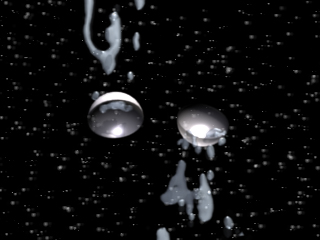

|
|
Navig.
page/section


_____
|
|
Pages soeurs
I, A propos des liants
II, Bulles, siccativ., struct. élec.
III, Caséine, phosphore, dissociation
IV, Les orbitales
V, L'aérogel
VI, Polarisation de la lumière
VII, Sfumato et diffusion Rayleigh
VIII, Les interférentielles
IX, Dextrine, farine et chiralité
X, L'ocre bleue
XI, Les métamatériaux
XII, Le jaunissement
XIII, Laser etc.
XIV, L'holographie
XV, L'holographie numérique
XVI, Extérieur, intérieur, chaux
XVII, L'électrolyse et les ions
XVIII, L'électricité, un peu plus loin
XIX, Oxydation, métaux
XX, Les échelles
XXI, Nature et évolution des résines
XXII, Le mouillage pigmentaire
XXIII, La molette
XXIV, Blanche neige
XXV, Lumière et matière
XXVI, Magnétisme
XXVII, Ambre et vieilles branches
XXVIII, L'origami miroir
XXIX, Le feu
XXX, Peau du métal
XXXI, La ville en un souffle
XXXII, Oxyder des matériaux
XXXIII, Ocre bleue, une solution
_____
|
Copyright © www.dotapea.com
Tous droits réservés.
Précisions cliquer ici
|
|
| |
|
|
Les dialogues sur la physique-chimie
appliquée aux arts
Chapitre
XVII
L'électrolyse et les ions
courants électriques
|
 |
dial dial
dial
|
Ce chapitre des Dialogues de Dotapea est une discussion entre Jean-Louis,
physico-chimiste au CNRS, et un candide, Emmanuel..
Ce texte est une sorte de préalable à deux autres articles (chap.
XVIII, chap. XIX).
Ce
triptyque "Électricité, oxydation et métaux" part de faits matériels abordés
d'abord d'un point de vue théorique et se prolonge en direction d'applications liées aux arts plastiques.
Note : sur l'étymologie du mot électrolyse,
lire l'article L'électrolyte du glossaire
|
|
Emmanuel :
Jean-Louis comment a-t-on découvert les ions ?
|
|
|
|
|
|
«
Magie » de l'électrolyse |
|
|
|
Une étymologie imagée mais problématique |
|
|
|
Qu'est-ce qu'un courant électrique ? |
|
|
|
L'électron escargot |
|
|
|
Carambolage dans un fil électrique |
|
Jean-Louis :
Si tu mets du sel dans l'eau, NaCl, tu formes immédiatement des ions Na+
et Cl-. Ils s'attirent, sans doute, mais ils ne fusionnent
pas, ne s'annihilent pas. Au pire ils reformeraient NaCl
[lire
passage in Chap.
III]. Et dans l'eau
il y a en fait le phénomène de
solvatation qui fait que les ions sont
"cachés" derrière une épaisse barrière d'eau. Les charges sont
"écrantées", donc les champs ne sont pas aussi intenses que ce qu'on
pourrait croire.
|
|
L'épaisse barrière de l'eau |
|
Emmanuel : Pourquoi
parle-t-on de "rayonnements ionisants" pour des flux qui semblent a
priori concerner surtout l'univers nucléaire, nucléique ?
Jean-Louis :
Les "rayonnements ionisants" portent ce nom parce qu'ils ionisent
les milieux qu'ils traversent. Le choc de particules énergétiques avec
des atomes de matière plus ou moins immobiles entraîne des pertes
d'électrons pour les atomes qui subissent les chocs. Cette ionisation
des milieux est d'ailleurs ce qui rend les rayonnements ionisants
dangereux.
Emmanuel : Pourquoi ?
Jean-Louis :
Une molécule, à la base, c'est neutre. Ionisée, elle n'a pas le
même comportement. En outre, dans le cas des molécules biologiques,
l'ionisation implique très souvent une "fracture" de la molécule. Ceci
fait qu'une cellule vivante qui se fait bombarder par des particules
"ionisantes" devient totalement incapable de fonctionner normalement.
Une cellule ou deux ça va, des milliers de cellules en moins, ça ne va
plus.
Emmanuel :
Cette "fracture", est-ce à cause de la quantité d'énergie qui est très
forte je crois, dans ces rayonnements ?
Jean-Louis :
Il y a certainement un effet d'échauffement, mais il est mineur.
Ce n'est pas la cuisson des cellules qui est dangereuse, c'est vraiment
la destruction physique (rupture) des constituants.
Emmanuel : Donc il y a un
phénomène surtout mécanique ?
Jean-Louis :
C'est mécanique si tu vois le départ d'un électron comme la perte
d'une pièce et le fractionnement d'une molécule comme une rupture. Sinon
c'est toujours un phénomène électronique ou chimique.
 |
|
Les rayonnements ionisants |
|
Chapitre suivant |
Retour
début de page
|
|

 Communication
Communication
|
|